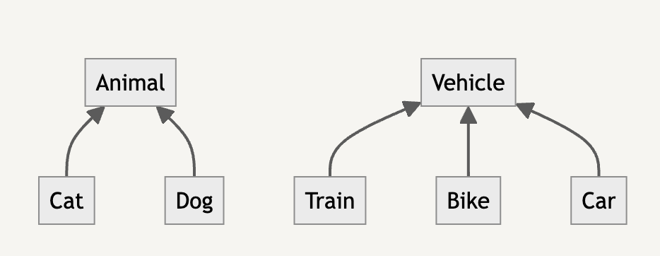
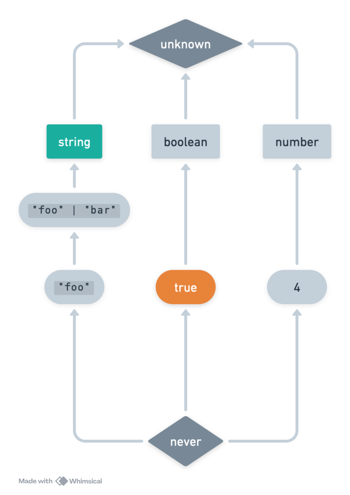
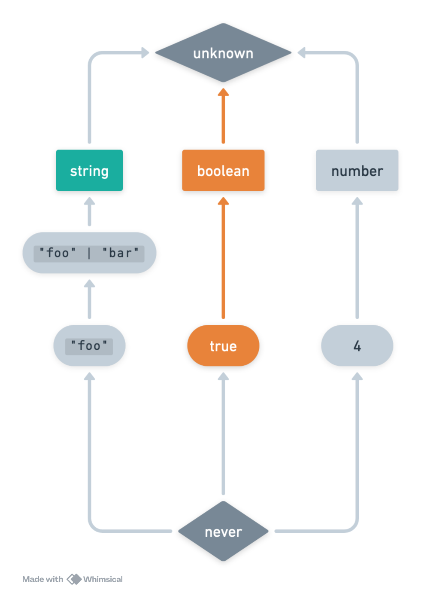
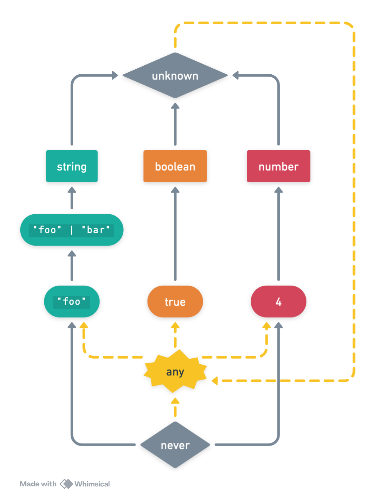
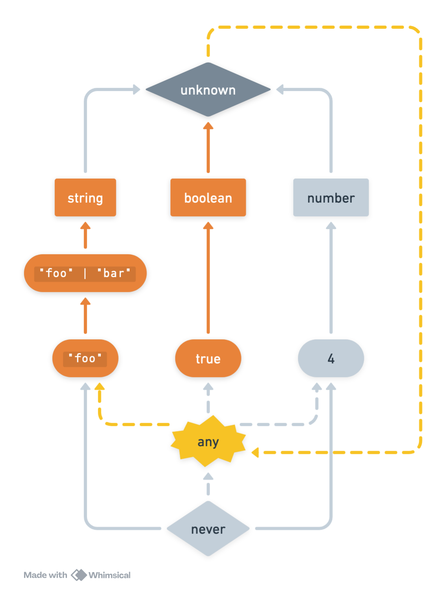
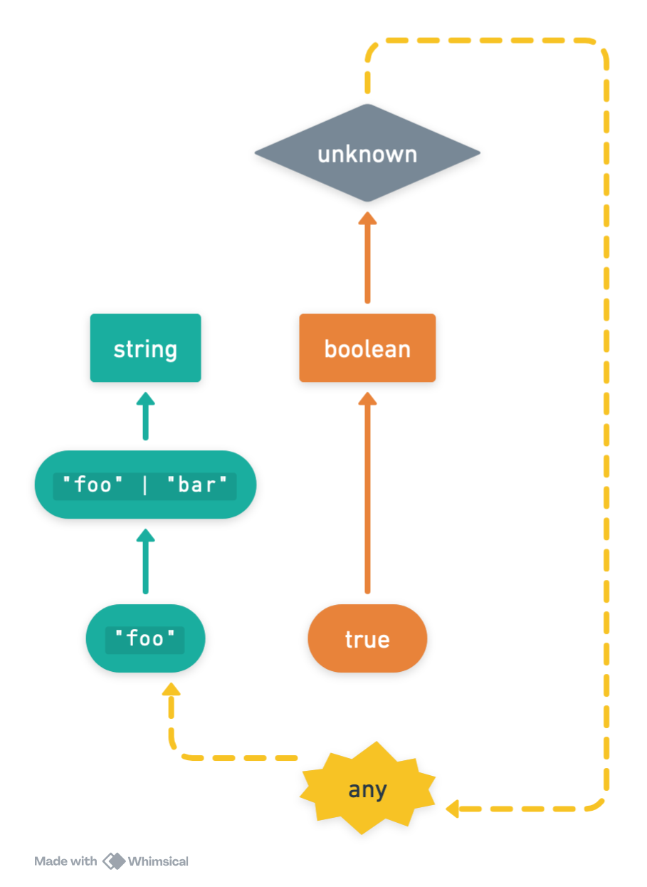
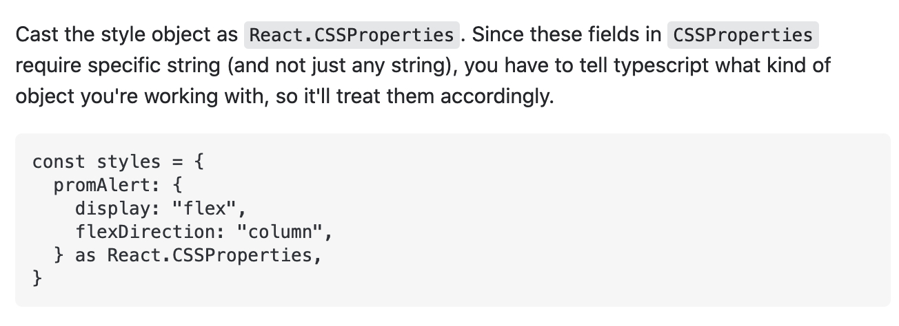
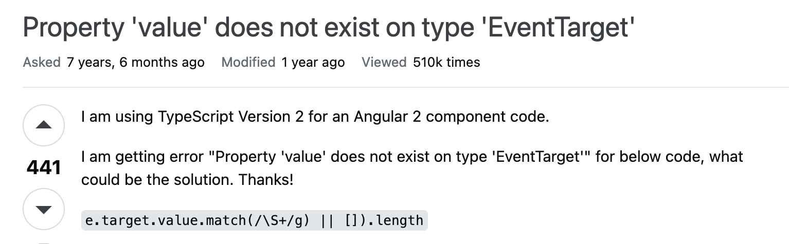
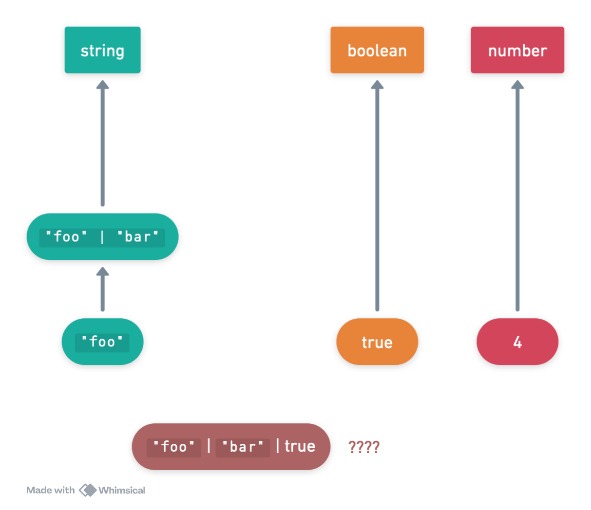
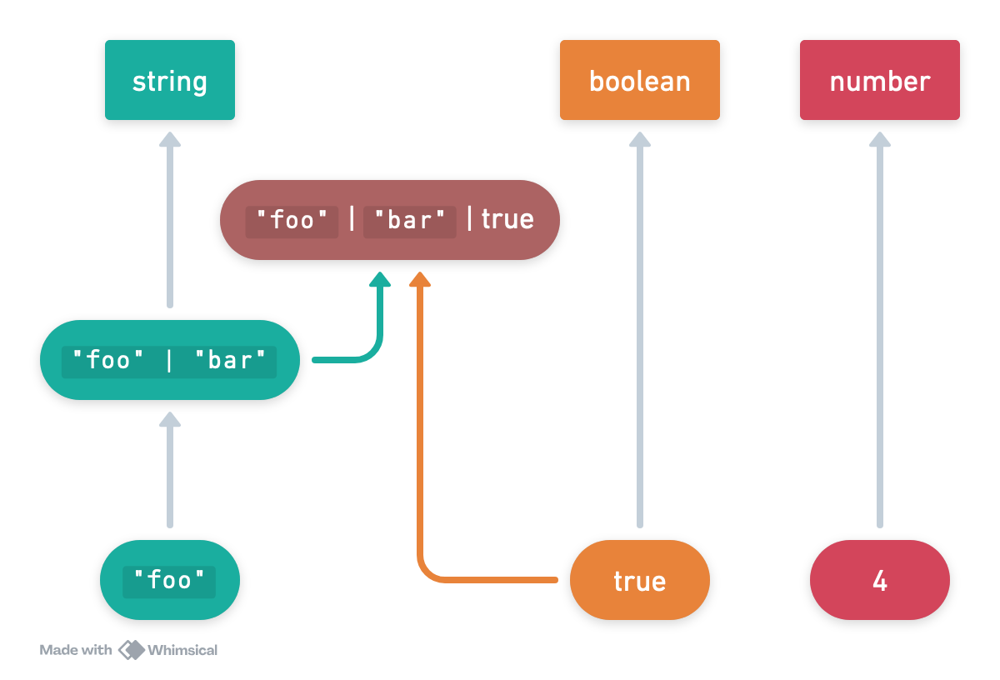

TypeScript 101: Opinionated fundamentals
For people who already use it at work
Slim Lim
About me
- Product Infrastructure team
- Joined Notion in 2019 (7 engineers)
- Left in late 2021 to focus on PhD
- Returned late 2022, balancing both (poorly)
My relationship to TypeScript
- Complex
- Long-lived
- Deeply antagonistic
TypeScript vs. other type systems
- Popular
- More expressive
- More dangerous
Problem: all existing resources are bad.
Background
Why was TypeScript created?
To migrate large, untyped enterprise codebases
Legacy JavaScript
This isn’t how Notion uses TypeScript!
We are not 2015-era Microsoft/Google/Facebook
Then vs. now
- Code starts untyped
- Priority is preserve existing behavior
- Escape hatches no worse than baseline
- Code starts typed
- New code should be written using typed idioms
- Escape hatches much worse than baseline
Escape hatches?
- Cop-out type:
any - Pragmas:
@ts-ignore - Flags:
--suppressImplicitAnyIndexErrors
Escape hatches, cont.
Casts:
x as FooType guards:
f(x: unknown): x is FooOverloads
How Notion uses TypeScript
- As a fully-typed language
- With the benefits of the JavaScript ecosystem
- Helps us write correct programs
- TypeScript: The Good Parts
Foundations
- Types vs. values
- Structural subtyping
Types vs. values
Sometimes, it’s more confusing…
'code' refers to a value, but is being used as a type here. Did you mean 'typeof code'? (2749)Taking a step back: static vs. dynamic
Static
- Compile/build-time
- Parsing, linting, typechecking
- Type/lint errors
Dynamic
- Runtime
- Evaluation, execution
- Exceptions/crashes
“expectation”
“reality”
approximates
Static
- Compile-time
- Parsing, linting, typechecking
- Type/lint errors
- Types
Dynamic
- Runtime
- Evaluation, execution
- Exceptions/crashes
- Values
approximates
Types approximate values.
How close is the approximation?
Java: not that close
| Value | Closest type (Java) |
|---|---|
"hello" |
String |
true |
boolean |
1 |
int |
TypeScript: pretty close!
| Value | Closest type (TS) | Closest type (Java) |
|---|---|---|
"hello" |
"hello" |
String |
true |
true |
boolean |
1 |
1 |
int |
Type-level vs. value-level
Type-level vs. value-level
typeof: Value → Type
dependent types
Syntactic restrictions
'code' refers to a value, but is being used as a type here. Did you mean 'typeof code'? (2749)Syntactic restrictions
TypeScript = structural subtyping
Subtyping

Liskov substitution principle
Can you replace type
FoowithBar, without breaking the program?
→ Bar is a subtype of Foo
→ Bar <:
Foo
Liskov substitution principle
Can you replace type
BlockwithTodoBlock, without breaking the program?
→ TodoBlock is a subtype of Block
→ TodoBlock <:
Block
Example: TodoBlock <: Block
Example: TodoBlock <: Block
Intuition: TodoBlock provides at least
as much information as Block
Structural subtyping
We know this works:
What if we inline everything from Block?
Structural subtyping
Nominal subtyping (Java, C++): based on explicit declarations/names.
Structural subtyping (TypeScript): based on shape and contents.
Analogy: Group chats
Corollary
Type aliases are for human benefit!
Quiz: Which is the subtype?
Answer:
Ais a subtype ofB
Quiz: Which is the subtype?
Answer:
TodoBlockis a subtype ofBlock
Why is this unintuitive?
Shouldn’t B be the subtype, since it’s
a subset of properties?
A valid subtype must contain a superset of fields.
(because the subtype is more specific!)
Object subtyping is tricky—double-check your intuition!
Width rules
Dog contains all the fields
in AnimalDepth rules
Dog must be a
subtype of the corresponding Animal fieldDepth example
RiskyExperiment can apply to a subset
of environments.
Subtyping visualization

Type refinements/narrowing: a quick review
Example: Blocks to text
How should we write this function?
Myth: any means “all possible types”
Subtyping directed acyclic graph (DAG)

Path in DAG = subtype

Is true a subtype of
string?

Is true a subtype of
string?

Is true a subtype of
string?
No.
Curse of any
any at the top…and
bottom

There is a cycle!
Is true a
string?

We can get past
unknown…

Oops
Oops

Lest you think I am exaggerating
Good news: one easy trick
Replace
anywithunknown!
- Works 85% of the time, for free
- Doctors hate her
- Not sure why this isn’t publicized more
unknown is the true “top” type
What about never?
Example: Blocks to text
Make invalid states unrepresentable
API status: optional soup
API status: discriminated union
Refinements
Thanks!
Come to TypeScript 201 next Friday if you want more
Miscellaneous stuff if time
Cultural practices
A normal day on the internet

CSSProperties?Top answer: jUst cASt

Another normal question
 
Adding union types to DAG
How to introduce a union type?

Draw incoming edges (subtypes)

Draw outgoing edges (supertypes)

Finished